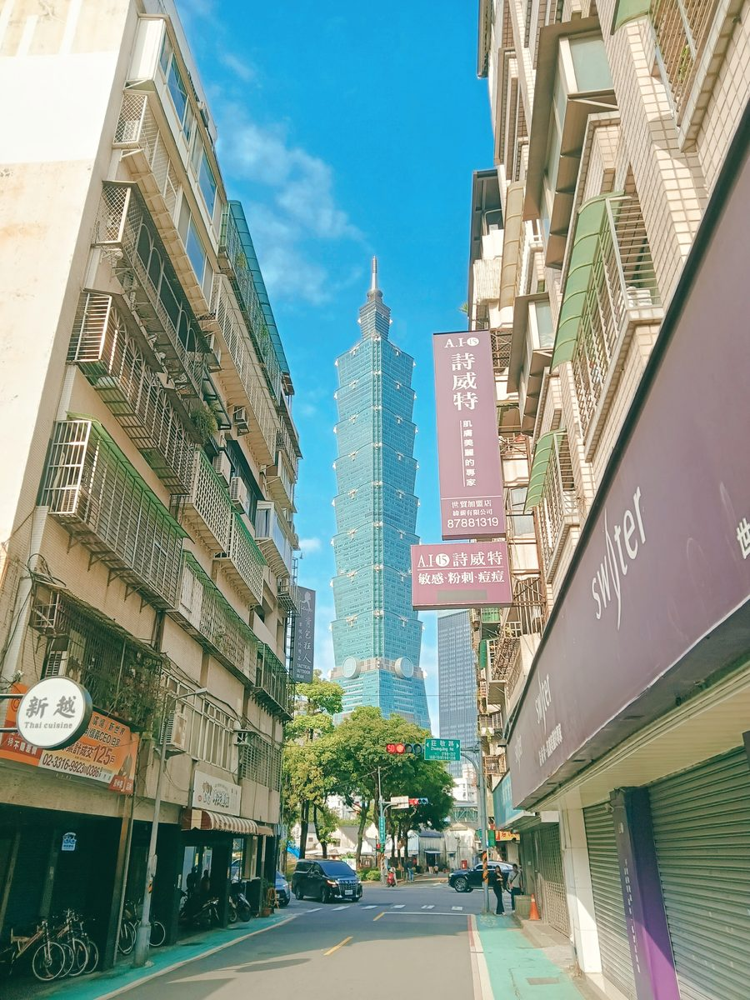
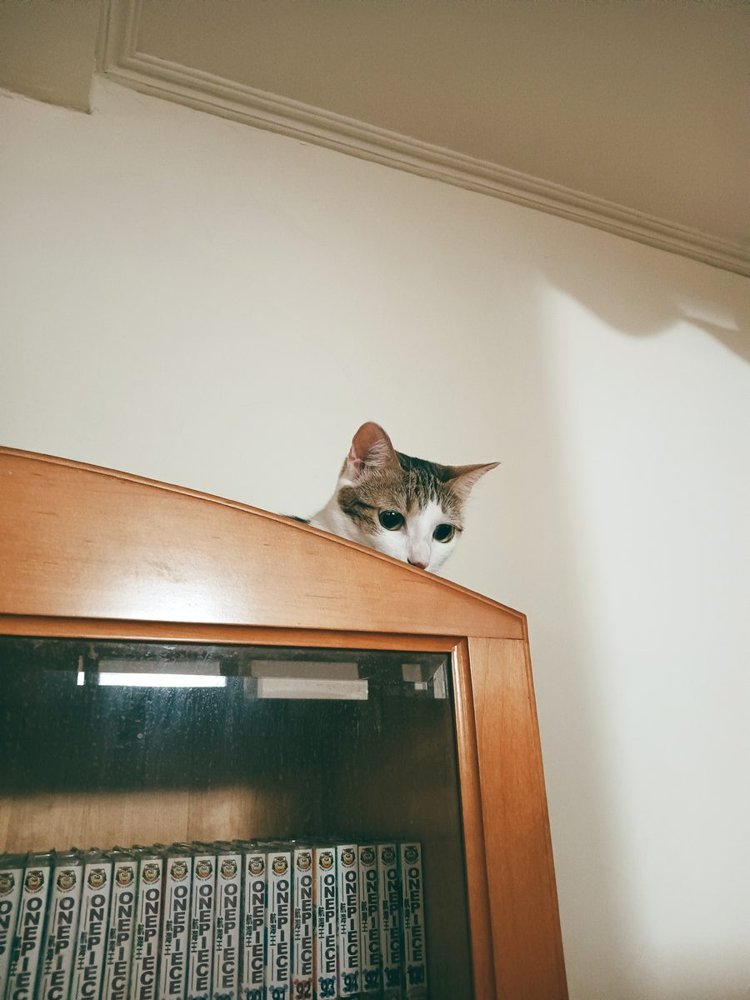
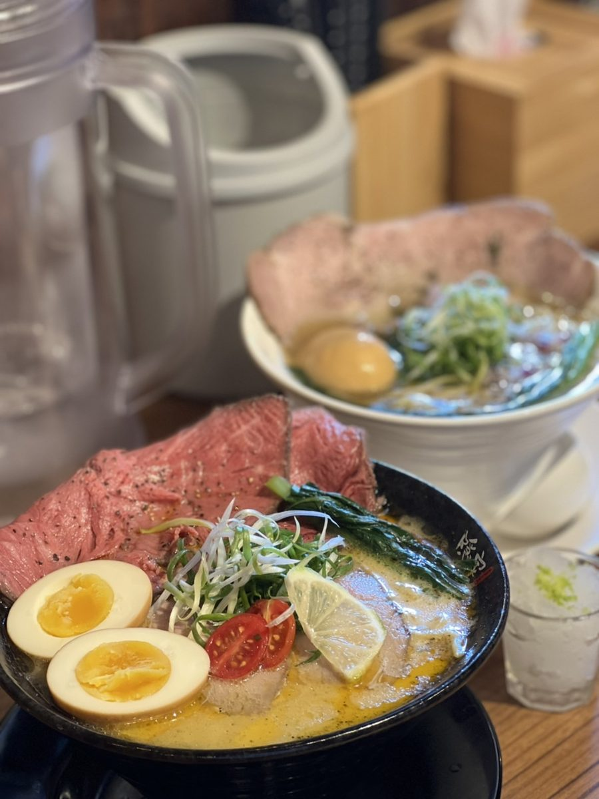
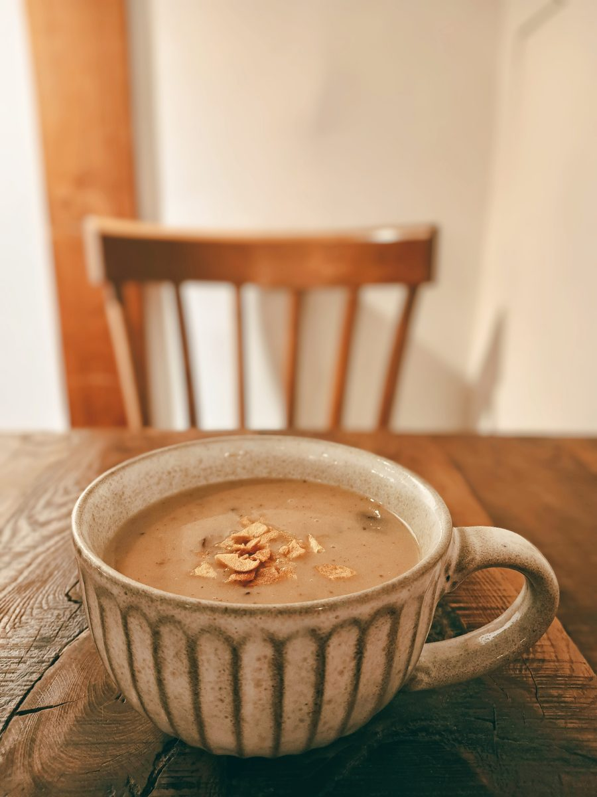
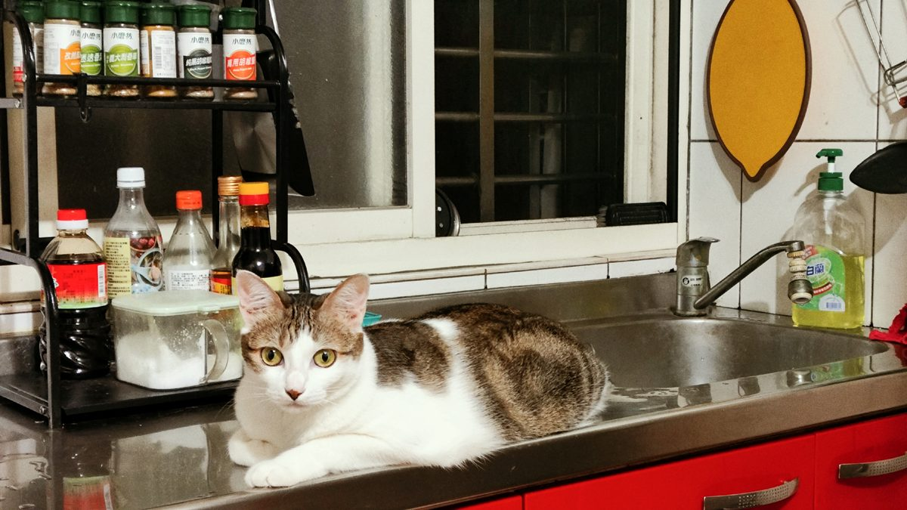

— 生活・影像・記錄
看劇、拍照、記錄生活的每一格。這裡是我選擇留下的畫面。
這裡是 Sumoai 的個人空間。沒有特定主題，只是把喜歡的東西放在這裡——追過的劇、拍過的照片、想記下來的日常。
Reel 是影片膠卷，也是片刻的集合。每一格都是真實發生過的某個瞬間。





聖水、弘大、明洞。這座城市很吵，但有些角落安靜得像在拍電影。帶著相機走了四天，留下幾百張照片和一些說不清楚的感覺。
整部劇的色調像泡在蜂蜜裡。看的時候覺得悶，看完才發現一直在回想那些場景。這大概就是好劇的定義。